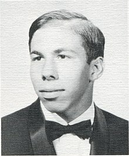
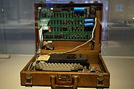
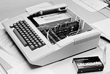
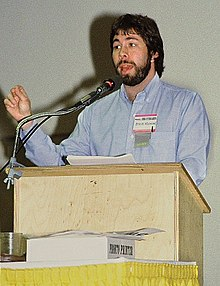
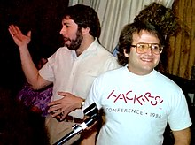
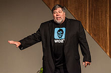
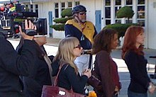

En 1975, Wozniak comenzó a desarrollar la primera computadora de Apple, el Apple I que se convirtió en la primera computadora lanzada por Apple cuando él y Jobs comenzaron a comercializarla el año siguiente. Diseñó la Apple II inicialmente en 1977, conocida como una de las primeras microcomputadoras de gran éxito producidas en masa mientras Jobs supervisaba el desarrollo de su caja de plástico moldeado en espuma y el primer empleado de Apple, Rod Holt, desarrollaba la fuente de alimentación de conmutación. Con el ingeniero de software Jef Raskin, Wozniak tuvo una gran influencia en el desarrollo inicial de los conceptos originales de Apple Macintosh de 1979 a 1981, cuando Jobs se hizo cargo del proyecto tras la breve salida de Wozniak de la empresa debido a un traumático accidente de avión. Después de dejar Apple permanentemente en 1985, Wozniak fundó el CL 9 y creó el primer control remoto universal programable, lanzado en 1987. Luego siguió varios otros negocios y empresas filantrópicas a lo largo de su carrera, centrándose principalmente en la tecnología en las escuelas de K-12.
A noviembre de 2019, Wozniak ha permanecido como empleado de Apple en un puesto ceremonial desde que se retiró en 1985.
El nombre que figura en el certificado de nacimiento de Wozniak es "Stephan Gary Wozniak", pero su madre dijo que pretendía que se escribiera "Stephen", que es lo que él usa. Wozniak ha mencionado que su apellido es ucraniano y ha hablado de su ascendencia ucraniana y polaca.
A principios de la década de 1970, el diseño de la caja azul de Wozniak le valió el apodo de "Berkeley Blue" en la comunidad phreaking.
 Foto de anuario de Wozniak de la Homestead High School
Carrera
Orígenes de Apple
En 1969, Wozniak regresó al área de la bahía de San Francisco después de ser expulsado de la Universidad de Colorado Boulder en su primer año por piratear el sistema informático de la universidad y enviar mensajes de broma en él. Se matriculó de nuevo en el Colegio De Anza en Cupertino antes de trasladarse a la Universidad de California, Berkeley, en 1971. En junio de 1971, como un proyecto autodidacta, Wozniak diseñó y construyó su primera computadora con su amigo Bill Fernández. Previendo útiles microprocesadores, pantallas y teclados, y usando una tarjeta perforada y sólo 20 chips TTL donados por un conocido, lo llamaron "Cream Soda" en honor a su bebida favorita. Un periodista pisó el cable de la fuente de alimentación y voló el ordenador, pero sirvió a Wozniak como "un buen preludio de mi pensamiento 5 años después con los ordenadores Apple I y Apple II". Antes de centrar su atención en Apple, trabajó en Hewlett-Packard (HP), donde diseñó calculadoras. Fue durante este tiempo que dejó la Universidad de Berkeley y se hizo amigo de Steve Jobs.
Wozniak fue presentado a Jobs por Fernández, quien asistió a Homestead High School con Jobs en 1971. Jobs y Wozniak se hicieron amigos cuando Jobs trabajó durante el verano en HP, donde Wozniak también estaba empleado, trabajando en un ordenador central.
Su primera asociación comercial comenzó a finales de ese año cuando Wozniak leyó un artículo titulado "Secretos de la pequeña caja azul" del número de octubre de 1971 de Esquire, y comenzó a construir sus propias "cajas azules" que le permitían hacer llamadas telefónicas de larga distancia sin costo alguno. Jobs, que se encargó de las ventas de las cajas azules, logró vender unas doscientas por 150 dólares cada una, y dividió las ganancias con Wozniak. Jobs le dijo más tarde a su biógrafo que si no hubiera sido por las cajas azules de Wozniak, "no habría habido una Apple".
En 1973, Jobs trabajaba para la empresa de juegos de arcade Atari, Inc. en Los Gatos, California. Se le asignó la creación de un tablero de circuitos para el videojuego Breakout. Según el cofundador de Atari, Nolan Bushnell, Atari ofreció 100 dólares (equivalentes a 576 dólares en 2019) por cada chip que se eliminara en la máquina. Jobs tenía pocos conocimientos sobre el diseño de placas de circuito y llegó a un acuerdo con Wozniak para repartir la tarifa de forma equitativa entre ellos si Wozniak podía minimizar el número de chips. Wozniak redujo el número de chips en 50, usando la RAM para la representación de los ladrillos. Demasiado complejo para ser comprendido en su momento, el hecho de que este prototipo tampoco tuviera mecanismos de puntuación o monedas significaba que el prototipo de Woz no podía ser utilizado. Jobs fue pagado el bono completo de todas formas. Jobs le dijo a Wozniak que Atari les dio sólo 700 dólares y que la parte de Wozniak era por lo tanto de 350 dólares (equivalente a 2.016 dólares en 2019). Wozniak no se enteró de la bonificación real de 5.000 dólares (equivalente a 28.797 dólares en 2019) hasta diez años después. Aunque consternado, dijo que si Jobs le hubiera hablado de ello y hubiera dicho que necesitaba el dinero, Wozniak se lo habría dado.
En 1975, Wozniak comenzó a diseñar y desarrollar la computadora que eventualmente lo haría famoso, el Apple I. El 29 de junio de ese año, probó su primer prototipo funcional, mostrando algunas letras y ejecutando programas de muestra. Fue la primera vez en la historia que un personaje que se muestra en una pantalla de televisión fue generado por una computadora doméstica. Con el Apple I, Wozniak estaba trabajando en gran medida para impresionar a otros miembros del Homebrew Computer Club con sede en Palo Alto, un grupo local de aficionados a la electrónica interesados en la informática. El club fue uno de varios centros clave que establecieron la era de los aficionados al hogar, creando esencialmente la industria de las microcomputadoras durante las próximas décadas. A diferencia de otros diseños personalizados de Homebrew, Apple tenía una capacidad de video fácil de lograr que atrajo a una multitud cuando se presentó.
El 1 de marzo de 1976, Wozniak completó el diseño básico de la computadora Apple I. Él solo diseñó el hardware, los diseños de las placas de circuitos y el sistema operativo de la computadora. Wozniak originalmente ofreció el diseño a HP mientras trabajaba allí, pero la compañía se lo negó en cinco ocasiones. Jobs entonces aconsejó a Wozniak que iniciara un negocio propio para construir y vender placas de circuito impreso desnudas del Apple I. Wozniak, al principio escéptico, luego fue convencido por Jobs que, aunque no tuvieran éxito, al menos podrían decirles a sus nietos que habían tenido su propia empresa. Para recaudar el dinero que necesitaban para construir el primer lote de placas de circuito, Wozniak vendió su calculadora científica HP mientras que Jobs vendió su camioneta Volkswagen.
El 1 de abril de 1976, Jobs y Wozniak formaron Apple Computer Company (ahora llamada Apple Inc.) junto con el supervisor administrativo Ronald Wayne, cuya participación en la nueva empresa duró poco. Los dos se decidieron por el nombre "Apple" poco después de que Jobs regresara de Oregón y le contara a Wozniak sobre el tiempo que pasó en un huerto de manzanos allí.
Después de que se formó la empresa, Jobs y Wozniak hicieron un último viaje al Homebrew Computer Club para dar una presentación de la versión completamente ensamblada de Apple I. Paul Terrell, quien estaba comenzando una nueva tienda de computadoras en Mountain View, California, llamado Byte Shop, vio la presentación y quedó impresionado con la máquina. Terrell le dijo a Jobs que ordenaría 50 unidades del Apple I y pagaría $ 500 cada una a la entrega, pero solo si venían completamente ensambladas, ya que no estaba interesado en comprar placas de circuito impreso desnudas.
Juntos, el dúo ensambló las primeras tablas en la casa de Los Altos de los padres de Jobs; inicialmente en su dormitorio y más tarde (cuando ya no quedaba espacio) en el garaje. El apartamento de Wozniak en San José estaba lleno de monitores, dispositivos electrónicos y juegos de computadora que había desarrollado. La Apple la vendí por 666,66 dólares. Wozniak dijo más tarde que no tenía idea de la relación entre el número y la marca de la bestia, y que se le ocurrió el precio porque le gustaba "repetir dígitos". Vendieron sus primeras 50 placas del sistema a Terrell más tarde ese año.
En noviembre de 1976, Jobs y Wozniak recibieron una financiación sustancial de un ingeniero y gerente de marketing de productos de Intel, en ese entonces semi retirado, llamado Mike Markkula. A pedido de Markkula, Wozniak renunció a su trabajo en HP y se convirtió en el vicepresidente a cargo de investigación y desarrollo en Apple. El Apple I de Wozniak era similar al Altair 8800, el primer microordenador disponible comercialmente, excepto que el Apple I no tenía provisión para tarjetas de expansión internas. Con tarjetas de expansión, el Altair podría conectarse a un terminal de computadora y programarse en BASIC. En contraste, la Apple I era una máquina aficionada. El diseño de Wozniak incluía una CPU de $ 25 ( MOS 6502 ) en una sola placa de circuito con 256 bytes de ROM, 4K u 8K bytes de RAM y un controlador de pantalla de 40 caracteres por 24 filas. La primera computadora de Apple carecía de carcasa, fuente de alimentación, teclado y pantalla — todos los componentes que tenía que proporcionar el usuario. Finalmente, se produjeron en total alrededor de 200 computadoras Apple I.
Después del éxito del Apple I, Wozniak diseñó el Apple II, la primera computadora personal con la capacidad de mostrar gráficos en color y un lenguaje de programación BASIC integrado. Inspirado por "la técnica que Atari usó para simular colores en sus primeros juegos de arcade", Wozniak encontró una manera de poner colores en el sistema NTSC usando un chip de US$1, mientras que los colores en el sistema PAL se logran por "accidente". cuando aparece un punto en una línea, y él dice que hasta el día de hoy no tiene idea de cómo funciona. Durante la etapa de diseño, Jobs argumentó que el Apple II debería tener dos ranuras de expansión, mientras que Wozniak quería ocho. Después de una acalorada discusión, durante la cual Wozniak amenazó con que Jobs debía "ir a buscar otra computadora", decidieron optar por ocho ranuras. Jobs y Wozniak presentaron el Apple II en la West Coast Computer Faire de abril de 1977. El primer artículo de Wozniak sobre Apple II apareció en la revista Byte en mayo de 1977. Se convirtió en una de las primeras computadoras personales producidas en masa de gran éxito en el mundo.
En 1980, Apple se hizo pública para obtener una rentabilidad financiera significativa e instantánea, convirtiendo a Jobs y Wozniak en millonarios. El sucesor previsto del Apple II, el Apple III, lanzado el mismo año, fue un fracaso comercial y se suspendió en 1984. Según Wozniak, el Apple III "tenía un 100 por ciento de fallas de hardware", y que la razón principal de estas fallas fue que el sistema fue diseñado por el departamento de marketing de Apple, a diferencia de los anteriores proyectos impulsados por ingeniería de Apple.
Durante la fase inicial de diseño y desarrollo del Macintosh original, Wozniak tuvo una gran influencia sobre el proyecto. Más tarde, denominada "Macintosh 128k", se convertiría en la primera computadora personal del mercado masivo con una interfaz gráfica de usuario integral y un mouse. Macintosh también introduciría la industria de la autoedición con la incorporación de Apple LaserWriter, la primera impresora láser que presenta gráficos vectoriales. En una entrevista de 2013, Wozniak dijo que en 1981, "Steve [Jobs] realmente se hizo cargo del proyecto cuando tuve un accidente de avión y no estaba allí".
El 7 de febrero de 1981, el Beechcraft Bonanza A36TC que pilotaba Wozniak se estrelló poco después de despegar del aeropuerto Sky Park en Scotts Valley, California. El avión se paró mientras ascendía, luego rebotó por la pista, rompió dos vallas y se estrelló contra un terraplén. Wozniak y sus tres pasajeros, la entonces prometida Candice Clark, su hermano Jack Clark y la novia de Jack, Janet Valleau, resultaron heridos. Wozniak sufrió graves lesiones en la cara y la cabeza, incluida la pérdida de un diente, y también sufrió durante las siguientes cinco semanas de amnesia anterógrada, la incapacidad de crear nuevos recuerdos. No recordaba el accidente y no recordaba su nombre mientras estaba en el hospital o las cosas que hizo durante un tiempo después de ser dado de alta. Más tarde diría que los juegos de computadora Apple II fueron los que lo ayudaron a recuperar la memoria. El informe de investigación de la Junta Nacional de Seguridad en el Transporte citó el despegue prematuro y la inexperiencia del piloto como causas probables del accidente.
Wozniak no regresó de inmediato a Apple después de recuperarse del accidente aéreo, ya que lo vio como una buena razón para irse. Infinite Loop caracterizó esta vez: "Salir del semi-coma había sido como activar un interruptor de reinicio en el cerebro de Woz. Era como si en su cuerpo de treinta años hubiera recuperado la mente que tenía a los dieciocho antes de que comenzara toda la locura informática. Y cuando eso sucedió, Woz descubrió que tenía poco interés en la ingeniería o el diseño. Más bien, de una manera extraña, quería comenzar de nuevo".
Ordenador Apple 1 original de 1976 en un maletín. De la colección del Sydney Powerhouse MuseumUna computadora Apple II con un módem externo
Festivales de la UC Berkeley y de EE.UU
Más tarde en 1981, después de recuperarse del accidente de avión, Wozniak se matriculó de nuevo en la UC Berkeley para completar su licenciatura. Debido a que su nombre era bien conocido en este momento, se inscribió bajo el nombre de Rocky Raccoon Clark, que es el nombre que aparece en su diploma aunque no se licenció oficialmente en ingeniería eléctrica e informática hasta 1987.
En mayo de 1982 y 1983, Wozniak, con la ayuda del promotor profesional de conciertos Bill Graham, fundó la compañía Unuson, una abreviatura de "unámonos en la canción", que patrocinó dos Festivales de EE. UU., con "EE. UU." pronunciado como el pronombre, no como iniciales. Inicialmente destinados a celebrar la evolución de las tecnologías, los festivales acabaron siendo una exposición de tecnología y un festival de rock como una combinación de música, ordenadores, televisión y gente. Tras perder varios millones de dólares en el festival de 1982, Wozniak declaró que, a menos que el evento de 1983 generara beneficios, pondría fin a su participación en los festivales de rock y volvería a diseñar computadoras. Más tarde ese año, Wozniak volvió al desarrollo de productos de Apple, no deseando más que un papel de ingeniero y un factor de motivación para la fuerza de trabajo de Apple.
Wozniak en 1983
Volver al desarrollo de productos de Apple
A mediados de la década de 1980, diseñó Apple Desktop Bus, un bus periférico de serie de bits patentado que se convirtió en la base de todos los modelos de computadora Macintosh y NeXT.
A partir de mediados de la década de 1980, cuando el Macintosh experimentó un crecimiento lento pero constante, el comité directivo de Apple, incluido Steve Jobs, faltaron el respeto cada vez más a su buque insignia y fuente de ingresos de Apple II — y a Wozniak junto con ella. La división Apple II — aparte de Wozniak — no fue invitada al evento de presentación de Macintosh, y se vio a Wozniak muy enfadado en el estacionamiento. Aunque los productos Apple II proporcionaron alrededor del 85% de las ventas de Apple a principios de 1985, la reunión anual de la compañía en enero de 1985 no mencionó la división Apple II ni sus empleados, una situación típica que frustraba a Wozniak.
Andy Hertzfeld, diseñador de software del sistema Macintosh, y Wozniak, en una reunión de Apple User Group Connection en 1985
Salida de la fuerza laboral de Apple
Incluso con el éxito que había ayudado a crear en Apple, Wozniak creía que la empresa le impedía ser quien quería ser, y que era "la perdición de su existencia". Le gustaba la ingeniería, no la administración, y dijo que extrañaba "la diversión de los primeros días". Cuando otros ingenieros talentosos se unieron a la empresa en crecimiento, ya no creía que lo necesitaran allí y, a principios de 1985, Wozniak dejó Apple nuevamente, afirmando que la empresa había "ido en la dirección equivocada durante los últimos cinco años". Luego vendió la mayor parte de sus acciones.
La plataforma Apple II llevó financieramente a la empresa hasta bien entrada la era Macintosh de finales de los 80; se hizo semiportátil con el Apple IIc de 1984, se amplió, con alguna aportación de Wozniak, por el Apple IIGS de 16 bits de 1986, y se suspendió por completo en 1992.
Carrera post-Apple
Después de su carrera en Apple, Wozniak fundó CL 9 en 1985, que desarrolló y lanzó al mercado el primer control remoto universal programable en 1987, denominado "CORE".
Más allá de la ingeniería, el segundo objetivo de toda la vida de Wozniak siempre había sido enseñar en la escuela primaria debido al importante papel que desempeñan los maestros en la vida de los estudiantes. Finalmente, enseñó clases de computación a niños de quinto a noveno grado, y también a maestros. Unuson continuó apoyando esto, financiando maestros y equipos adicionales.
En 2001, Wozniak fundó Wheels of Zeus (WOZ) para crear tecnología GPS inalámbrica para "ayudar a la gente común a encontrar cosas cotidianas mucho más fácilmente". En 2002, se unió a la junta directiva de Ripcord Networks, Inc., uniéndose a los ex alumnos de Apple Ellen Hancock, Gil Amelio, Mike Connor y el cofundador de Wheels of Zeus Alex Fielding en una nueva empresa de telecomunicaciones. Más tarde, ese mismo año, se unió a la junta directiva de Danger, Inc., el fabricante de Hip Top.
En 2006, Wheels of Zeus se cerró y Wozniak fundó Acquicor Technology, un holding para adquirir empresas de tecnología y desarrollarlas, con los ex alumnos de Apple Hancock y Amelio. Desde 2009 hasta 2014 fue científico jefe de Fusion-io. En 2014 se convirtió en director científico de Primary Data, que fue fundada por algunos ex ejecutivos de Fusion-io.
Silicon Valley Comic Con (SCVC) es una planta anual de la cultura pop y la tecnologíade convenciones en el centro de convenciones McEnery de San José, en San José, California. La convención fue cofundada por Wozniak y Rick White, con Trip Hunter como director ejecutivo. Wozniak anunció el evento anual en 2015 junto con la leyenda de MarvelStan Lee.
En octubre de 2017, Wozniak fundó Woz U, un servicio de tecnología educativa en línea para estudiantes y empleados independientes.En diciembre de 2018, Woz U obtuvo la licencia como escuela de la junta estatal de Arizona.
Aunque dejó de forma permanente a Apple como empleado activo en 1985, Wozniak decidió no retirarse nunca de la lista oficial de empleados y continúa representando a la empresa en eventos o entrevistas. Hoy recibe un estipendio de Apple para este puesto, estimado en 2006 en US$120 000 al año. También es accionista de Apple. Mantuvo una relación amistosa con Steve Jobs hasta la muerte de Jobs en octubre de 2011. Sin embargo, en 2006, Wozniak declaró que él y Jobs no eran tan cercanos como solían ser. En una entrevista de 2013, Wozniak dijo que el Macintosh original "falló" con Steve Jobs, y que no fue hasta que Jobs se fue cuando se convirtió en un éxito. Llamó al grupo Apple Lisa el equipo que había echado a Jobs, y que a Jobs le gustaba llamar al grupo Lisa "idiotas por hacer [la computadora Lisa] demasiado cara". Para competir con Lisa, Jobs y su nuevo equipo produjeron una computadora más barata, una que, según Wozniak, era "débil", "pésima" y "todavía a un precio bastante alto". "Lo hizo cortando la RAM, obligándote a intercambiar discos aquí y allá", dice Wozniak. Atribuyó el eventual éxito del Macintosh a personas como John Sculley "que trabajó para construir un mercado Macintosh cuando el Apple II desapareció".
Patentes
Wozniak figura como el único inventor de las siguientes patentes de apple:
Patente de Estados Unidos N.º 4.136.359: "Microcomputadora para uso con pantalla de video" lo que fue incluido en el Salón de la Fama de Inventores Nacionales.
Patente de EE. UU. N.º 4.210.959: "Controlador para disco magnético, grabador o similar"
Patente de EE. UU. N.º 4.217.604: "Aparato para controlar digitalmente la pantalla en color PAL"
Patente de EE. UU. N.º 4.278.972: "Medios de generación de señales de color controlados digitalmente para su uso con pantallas"
Wozniak en el Centro de Exposiciones y Convenciones de Melbourne, Australia, 2012
Filantropía
En 1990, Wozniak ayudó a fundar la Electronic Frontier Foundation, proporcionando algunos de los fondos iniciales de la organización y sirviendo en su Junta Directiva fundadora. Es el patrocinador fundador del Tech Museum, Silicon Valley Ballet y Children's Discovery Museum de San José. Además, desde que dejó Apple, Wozniak ha proporcionado todo el dinero y mucho apoyo técnico en el sitio para el programa de tecnología en su distrito escolar local en Los Gatos. Un.U.Son. (Unite Us In Song), una organización que Wozniak formó para organizar los dos festivales de Estados Unidos, ahora tiene la tarea principal de apoyar sus proyectos educativos y filantrópicos. En 1986, Wozniak prestó su nombre a los premios Stephen G. Wozniak Achievement Awards (conocidos popularmente como "premios Wozzie"), que entregó a seis estudiantes de secundaria y universitarios del Área de la Bahía por su uso innovador de las computadoras en los campos de los negocios, el arte, y música. Wozniak es el tema de una producción cinematográfica realizada por estudiantes de la fundación sin fines de lucro Dream Camp de su amigo (Joe Patane) para jóvenes con necesidades de alto nivel titulada Camp Woz: The Admirable Lunacy of Philanthropy.
Más tarde donó fondos para crear el "Laboratorio Woz" en la Universidad de Colorado en Boulder. En 1998, fue nombrado miembro del Museo de Historia de la Computación "por cofundar Apple Computer e inventar la computadora personal Apple I".
En septiembre de 2000, Wozniak fue incluido en el Salón de la Fama de Inventores Nacionales, y en 2001 recibió el 7.º Premio Anual Heinz de Tecnología, Economía y Empleo.
En 2004, Wozniak recibió el quinto premio anual de tecnología del Festival Tecnológico de Telluride.
Fue galardonado con el Premio Global del Presidente de Armenia por Contribución Destacada a la Humanidad a través de las TI en 2011.
El 17 de febrero de 2014, en Los Ángeles, Wozniak recibió la 66.ª Medalla Hoover de manos del presidente y director ejecutivo de IEEE, J. Roberto de Marca. El premio se otorga a un ingeniero cuyos logros profesionales y esfuerzos personales han promovido el bienestar de la humanidad y es administrado por una junta que representa a cinco organizaciones de ingeniería: la Sociedad Estadounidense de Ingenieros Mecánicos; la Sociedad Estadounidense de Ingenieros Civiles; el Instituto Americano de Ingenieros Químicos; el Instituto Americano de Ingenieros de Minería, Metalúrgica y Petróleo; e Instituto de Ingenieros Eléctricos y Electrónicos.
El Capítulo de la Organización de Jóvenes Presidentes de la Ciudad de Nueva York presentó su Premio a la Trayectoria 2014 a Wozniak el 16 de octubre de 2014 en el Museo Americano de Historia Natural.
En noviembre de 2014, Industry Week agregó a Wozniak al Salón de la Fama de la Fabricación.
El 19 de junio de 2015, Wozniak recibió el premio Legacy for Children del Children's Discovery Museum de San José. El premio Legacy for Children reconoce a una persona cuyo legado ha beneficiado significativamente el aprendizaje y la vida de los niños. El propósito del premio es enfocar la atención de Silicon Valley en las necesidades de nuestros niños, animándonos a todos a asumir la responsabilidad de su bienestar. Los candidatos son nominados por un comité de miembros notables de la comunidad que participan en la educación infantil, la atención médica, los servicios sociales y humanos y las artes. La ciudad de San José nombró una calle "Woz Way" en su honor. La dirección del Children's Discovery Museum de San José es 180 Woz Way.
El 20 de junio de 2015, la Asociación de Antiguos Alumnos de Cal (Asociación de Antiguos Alumnos de UC Berkeley) le otorgó a Wozniak el premio Alumno del Año 2015. "Nos sentimos honrados de reconocer a Steve Wozniak con el premio más estimado de CAA", dijo la presidenta de CAA, Cynthia So Schroeder '91. "Sus invaluables contribuciones a la educación ya UC Berkeley lo colocan entre los alumnos más destacados y respetados de Cal".
En marzo de 2016, High Point University anunció que Wozniak actuará como su Innovador en Residencia. Wozniak fue el orador de graduación de la Universidad de High Point en 2013. A través de esta asociación continua, Wozniak se conectará con los estudiantes de la Universidad de High Point sobre una variedad de temas y hará visitas al campus periódicamente.
En marzo de 2017, Wozniak fue incluido por la empresa británica Richtopia en el número 18 de su lista de los 200 filántropos y emprendedores sociales más influyentes.
Steve Wozniak ha sido mencionado, representado o entrevistado en innumerables ocasiones en los medios desde la fundación de Apple hasta el presente. La revista Wired lo describió como una persona de "autoestima tolerante e ingenua" que entrevista con "una voz cantarina sin parar".
Documentales
Steve Jobs: El hombre de la máquina (2015)
Camp Woz: la admirable locura de la filantropía - un documental de 2009
Geeks a bordo - un documental de 2007
La historia secreta de la piratería - una película documental de 2001 protagonizada por Wozniak y otros phreakers y piratas informáticos
Triunfo de los nerds - una serie documental de PBS de 1996 sobre el auge de la computadora personal
El momento formativo de Steve Wozniak - un cortometraje original del 15 de marzo de 2016 de Reddit Formative Moment
2015: Steve Jobs vs Bill gates La competencia para controlar la computadora personal, 1974-199: Película original del National Geographic Channel para la serie American Genius
Televisión
Después de ver su actuación en Saratoga, California, Wozniak comenzó a salir con la comediante Kathy Griffin. Juntos, asistieron a los premios Emmy 2007, y posteriormente hicieron muchas apariciones en la cuarta temporada de su programa Kathy Griffin: My Life on the D-List . Wozniak está en el programa como su cita para la entrega de premios del Producers Guild of America . Sin embargo, en una aparición del 19 de junio de 2008 en The Howard Stern Show, Griffin confirmó que ya no estaban saliendo y decidió seguir siendo amigos.
Wozniak retrata una parodia de sí mismo en el primer episodio de la serie de televisión Code Monkeys; interpreta al dueño de Gameavision antes de venderlo para ayudar a financiar su próxima empresa. Más tarde aparece de nuevo en el episodio 12 cuando está en Las Vegas en la Convención anual de videojuegos y ve a Dave y Jerry. También aparece en una parodia de los anuncios de "Get a Mac" que aparecen en el episodio final de la segunda temporada de Code Monkeys. Wozniak también es entrevistado y presentado en el documental Hackers Wanted y en la BBC.
Wozniak compitió en la temporada 8 de Dancing with the Stars en 2009 donde bailó con Karina Smirnoff. Aunque Wozniak y Smirnoff recibieron 10 puntos combinados de los tres jueces de 30, la puntuación más baja de la noche, permaneció en la competencia. Más tarde publicó en un sitio de redes sociales que creía que el recuento de votos no era legítimo y sugirió que los jueces de Dancing with the Stars habían mentido sobre el recuento de votos para mantenerlo en el programa. Después de ser informado sobre el método de juzgar y contar los votos, se retractó y se disculpó por sus declaraciones. Aunque sufrió un tirón en el tendón de la corva y una fractura en el pie, Wozniak continuó compitiendo, pero fue eliminado de la competencia el 31 de marzo, con una puntuación de 12 sobre 30 para un Tango argentino.
El 30 de septiembre de 2010, apareció como él mismo en el episodio de la temporada 4 de The Big Bang Theory " The Cruciferous Vegetable Amplification". Mientras cena en The Cheesecake Factory donde trabaja Penny, Sheldon se acerca a él a través de la telepresencia en un robot Texai. Leonard intenta explicarle a Penny quién es Wozniak, pero ella dice que ya lo conoce de Dancing with the Stars.
El 30 de septiembre de 2013, apareció junto con los primeros empleados de Apple, Daniel Kottke y Andy Hertzfeld, en el programa de televisión John Wants Answers para hablar sobre la película Jobs.
Wozniak durante el rodaje de kathy Griffin: My Life on the D-List
Vida personal
Wozniak vive en Los Gatos, California. Solicitó la ciudadanía australiana en 2012 y ha declarado que le gustaría vivir en Melbourne, Australia en el futuro. Wozniak ha sido referido con frecuencia por el apodo de "Woz" o "The Woz"; también se le ha llamado "El maravilloso mago de Woz" y "El segundo Steve" (en lo que respecta a su primer socio comercial y amigo de toda la vida, Steve Jobs). "WoZ" (abreviatura de " Wheels of Zeus ") es el nombre de una empresa que Wozniak fundó en 2002; cerró en 2006.
Wozniak describe su ímpetu para unirse a los masones en 1979 como poder pasar más tiempo con su entonces esposa, Alice Robertson, que pertenecía a la Orden de la Estrella del Este, asociada con los masones. Wozniak ha dicho que rápidamente ascendió a un francmasón de tercer grado porque, haga lo que haga, intenta hacerlo bien. Fue iniciado en 1979 en Charity Lodge No. 362 en Campbell, California, ahora parte del monte. Moriah Lodge No. 292 en Los Gatos. Hoy ya no está involucrado: "Me convertí en masón y sé de qué se trata, pero realmente no encaja con mi personalidad tecnológica / geek. Aun así, puedo ser cortés con otras personas de otros ámbitos de la vida. Después de que se archivó nuestro divorcio, nunca volví a asistir, pero contribuí lo suficiente para una membresía de por vida".
Wozniak estuvo casado con la medallista de oro en canoa de eslalon Candice Clark desde junio de 1981 hasta 1987. Tienen tres hijos juntos, el más joven nació después de que finalizó su divorcio. Después de una relación de alto perfil con la actriz Kathy Griffin, quien lo describió en House Tonight de Tom Green en 2008 como "el mayor tecno-nerd del Universo", Wozniak se casó con Janet Hill, su actual esposa.
En cuanto a sus opiniones religiosas, Wozniak se ha llamado a sí mismo "ateo o agnóstico".
Es miembro de un equipo de Segway Polo, Silicon Valley Aftershocks.
En 2006, fue coautor con Gina Smith de su autobiografía, iWoz: From Computer Geek to Cult Icon: How I Invent the Personal Computer, cofundé Apple y me divertí haciéndolo. El libro entró en la lista de los más vendidos del New York Times.
El videojuego favorito de Wozniak es Tetris para Game Boy, y obtuvo una puntuación alta para Sabotage. En la década de 1990, envió tantas puntuaciones altas de Tetris a Nintendo Power que ya no imprimían sus puntuaciones, por lo que comenzó a enviarlas con el nombre inverso "Evets Kainzow". Antes del lanzamiento de Game Boy, Wozniak llamó a Gran Trak 10 su "juego favorito" y dijo que jugaba al arcade mientras desarrollaba hardware para la primera versión de Breakout para Atari. En 1985, Steve Jobs se refirió a Wozniak como un "adicto" a Gran Trak 10.
Wozniak ha expresado su desdén personal por el dinero y la acumulación de grandes cantidades de riqueza. Le dijo a la revista Fortune en 2017: "No quería estar cerca del dinero, porque podría corromper tus valores... Realmente no quería estar en esa categoría de 'más de lo que podrías necesitar' ". También dijo que solo invierte en cosas "cercanas a su corazón". Cuando Apple salió a bolsa por primera vez en 1980, Wozniak ofreció $ 10 millones de sus propias acciones a los primeros empleados de Apple, algo que Jobs se negó a hacer.
Wozniak tiene la condición de prosopagnosia o ceguera facial
Puntos de vista sobre la superinteligencia artificial
En marzo de 2015, Wozniak declaró que, si bien originalmente había rechazado los escritos de Ray Kurzweil, quien afirmaba que la inteligencia artificial superará a la inteligencia humana en varias décadas, Wozniak cambió de opinión: "Estoy de acuerdo en que el futuro es aterrador y muy malo para la gente. . Si construimos estos dispositivos para que se encarguen de todo por nosotros, eventualmente pensarán más rápido que nosotros y se librarán de los humanos lentos para administrar las empresas de manera más eficiente". Wozniak declaró que había comenzado a identificar una sensación contradictoria de aprensión sobre la inteligencia artificial, mientras seguía apoyando el avance de la tecnología.
En junio de 2015, Wozniak cambió de opinión y dijo que una toma de control de superinteligencia sería buena para los humanos: "Van a ser más inteligentes que nosotros y si son más inteligentes que nosotros, se darán cuenta de que nos necesitan. . . Queremos ser la mascota de la familia y que nos cuiden todo el tiempo... Se me ocurrió esta idea hace unos años y comencé a alimentar a mi perro con filete de carne y pollo todas las noches porque 'hazlo a los demás' ".
En 2016, Wozniak volvió a cambiar de opinión, afirmando que ya no le preocupaba la posibilidad de que surja una superinteligencia porque es escéptico de que las computadoras puedan competir con la "intuición" humana: "Una computadora podría resolver una decisión lógica de punto final, pero esa no es la forma en que funciona la inteligencia en los humanos". Wozniak agregó que si las computadoras se vuelven superinteligentes, "serán socios de los humanos sobre todas las demás especies para siempre".
Véase También
Apple IIGS, estuche de edición limitada moldeado con la firma de Woz